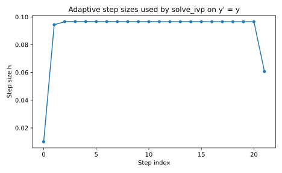
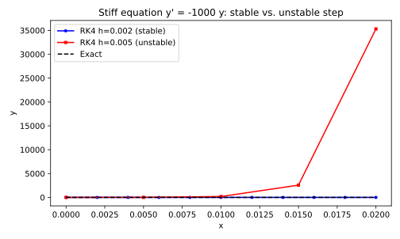

import numpy as np
def f(x, y):
return y
def exact_solution(x):
return np.exp(x)
x0 = 0.0; y0 = 1.0; x_end = 2.09 Beyond RK4 — Where the Method Breaks Down
Chapter 8 showed that RK4 achieves fourth-order accuracy at a cost of four function evaluations per step. A natural question follows: can we continue the pattern, adding stages to gain order indefinitely? This chapter shows why the answer is unsatisfying. The number of order conditions grows faster than the available degrees of freedom, the algebra becomes intractable by hand, and higher-order methods carry practical costs that often outweigh their accuracy gains. We close by showing what practitioners actually use instead: adaptive step-size control and, for stiff problems, implicit solvers.
9.1 The Natural Question: Can We Just Keep Going?
After deriving RK4 from scratch, the natural next thought is: why stop? Chapters 4 through 7 built a clear pattern — each new stage added one order of accuracy at a cost of one additional function evaluation per step. Euler used 1 stage for order 1. RK2 used 2 stages for order 2. RK3 used 3 stages for order 3. RK4 used 4 stages for order 4. The pattern seems to suggest that RK5 should use 5 stages and give fifth-order accuracy.
That pattern breaks. In 1963 and 1965, John Butcher proved that no explicit Runge-Kutta method can achieve fifth-order accuracy with only five stages. The minimum is six. For order six, seven stages are required. The extra stages cost additional function evaluations per step, but the deeper problem is the order conditions: the number of algebraic constraints that the stage weights must satisfy grows much faster than the number of free parameters. This is the Butcher barrier, and it marks the end of the hand-derivation era for Runge-Kutta methods.
import pandas as pd
pd.DataFrame({
"Method": ["Euler (RK1)", "Midpoint / Heun (RK2)",
"Kutta (RK3)", "Classical RK4"],
"Stages": [1, 2, 3, 4],
"Order": [1, 2, 3, 4],
})| Method | Stages | Order | |
|---|---|---|---|
| 0 | Euler (RK1) | 1 | 1 |
| 1 | Midpoint / Heun (RK2) | 2 | 2 |
| 2 | Kutta (RK3) | 3 | 3 |
| 3 | Classical RK4 | 4 | 4 |
9.2 The Butcher Barrier: Why Order 5 Requires 6 Stages, Not 5
For orders 1 through 4, the number of stages equals the order. This is not a coincidence — it is a structural property. At each order, the number of new conditions added is small enough that the free parameters in the tableau can satisfy them all with parameters to spare. The last column in the table below marks where this elegance ends.
pd.DataFrame({
"Order p": [1, 2, 3, 4, 5, 6, 7, 8],
"Total Conditions": [1, 2, 4, 8, 17, 37, 85, 200],
"Min Stages": [1, 2, 3, 4, 6, 7, 9, 11],
"Stages = Order?": ["yes", "yes", "yes", "yes (last time)",
"no -- Butcher barrier", "no", "no", "no"],
})| Order p | Total Conditions | Min Stages | Stages = Order? | |
|---|---|---|---|---|
| 0 | 1 | 1 | 1 | yes |
| 1 | 2 | 2 | 2 | yes |
| 2 | 3 | 4 | 3 | yes |
| 3 | 4 | 8 | 4 | yes (last time) |
| 4 | 5 | 17 | 6 | no -- Butcher barrier |
| 5 | 6 | 37 | 7 | no |
| 6 | 7 | 85 | 9 | no |
| 7 | 8 | 200 | 11 | no |
The “total conditions” column counts all conditions needed to achieve order \(p\), accumulated from order 1 upward. Each new order adds more conditions than the previous one: order 1 adds 1, order 2 adds 1, order 3 adds 2, order 4 adds 4, order 5 adds 9, order 6 adds 20, and so on. The jumps grow because each condition corresponds to an independent partial-derivative structure in the Taylor expansion, and the number of such structures grows faster than the number of adjustable parameters in an \(s\)-stage tableau.
For a method to be order \(p\), every term through \(h^p\) in the local truncation error must cancel exactly. Each cancellation imposes one algebraic condition on the coefficients. At order 4, there are 8 such conditions and 4 stages provide exactly enough freedom to satisfy them (with two free parameters left over, which is why the classical RK4 belongs to a family). At order 5, the 17 conditions require at least 6 stages to provide enough parameters. Butcher proved no 5-stage method can be order 5 — the freedom runs out before all conditions are satisfied.
9.3 RK5: The 17 Order Conditions in Python
An explicit 6-stage RK method has the following free parameters: the abscissae \(c_2\) through \(c_6\) (5 values), the lower-triangular stage matrix \(A\) (15 entries), and the weights \(b_1\) through \(b_6\) (6 values), for a total of 26 free parameters. Achieving fifth-order accuracy imposes 17 conditions. That leaves 9 degrees of freedom, meaning RK5 is not a unique method but a 9-dimensional family of solutions — much larger than RK4’s 2-dimensional family, but far harder to navigate because the conditions themselves are more complex.
c_params, a_params, b_params = 5, 15, 6
total_params = c_params + a_params + b_params
order_conditions_5 = 17
degrees_of_freedom = total_params - order_conditions_5
{"Total parameters": total_params,
"Order-5 conditions": order_conditions_5,
"Degrees of freedom": degrees_of_freedom}{'Total parameters': 26, 'Order-5 conditions': 17, 'Degrees of freedom': 9}Rather than deriving all 17 conditions symbolically (that computation dwarfs the RK4 derivation in Chapter 7), we use one specific known solution: the Fehlberg 5th-order method. Erwin Fehlberg published these coefficients in 1969 as part of an embedded RK4(5) pair designed for adaptive step-size control. The coefficients are exact rational numbers and the method achieves fifth-order accuracy on smooth problems.
def rk5_step(f, x, y, h):
k1 = f(x, y)
k2 = f(x + h/4, y + (h/4)*k1)
k3 = f(x + (3/8)*h, y + h*((3/32)*k1 + (9/32)*k2))
k4 = f(x + (12/13)*h,
y + h*((1932/2197)*k1 - (7200/2197)*k2
+ (7296/2197)*k3))
k5 = f(x + h,
y + h*((439/216)*k1 - 8*k2 + (3680/513)*k3
- (845/4104)*k4))
k6 = f(x + h/2,
y + h*((-8/27)*k1 + 2*k2 - (3544/2565)*k3
+ (1859/4104)*k4 - (11/40)*k5))
return y + h*((16/135)*k1 + (6656/12825)*k3
+ (28561/56430)*k4 - (9/50)*k5 + (2/55)*k6)def rk4_step(f, x, y, h):
k1 = f(x, y)
k2 = f(x + h/2, y + (h/2)*k1)
k3 = f(x + h/2, y + (h/2)*k2)
k4 = f(x + h, y + h*k3)
return y + (h/6)*(k1 + 2*k2 + 2*k3 + k4)
def method_run(step_fn, ff, xx0, yy0, x_e, hh):
n_steps = round((x_e - xx0) / hh)
xs = [xx0]; ys = [yy0]
for _ in range(n_steps):
ys.append(step_fn(ff, xs[-1], ys[-1], hh))
xs.append(xs[-1] + hh)
return np.array(xs), np.array(ys)h_list = [1.0/2**k for k in range(2, 8)]
err_rk4 = [abs(method_run(rk4_step, f, x0, y0, x_end, hv)[1][-1]
- exact_solution(x_end))
for hv in h_list]
err_rk5 = [abs(method_run(rk5_step, f, x0, y0, x_end, hv)[1][-1]
- exact_solution(x_end))
for hv in h_list]
def old_over_new_ratios(errs):
out = [""]
for i in range(1, len(errs)):
out.append(f"{errs[i-1]/errs[i]:.2f}")
return out
pd.DataFrame({
"h": h_list,
"RK4 error": [f"{e:.4e}" for e in err_rk4],
"RK4 ratio": old_over_new_ratios(err_rk4),
"RK5 error": [f"{e:.4e}" for e in err_rk5],
"RK5 ratio": old_over_new_ratios(err_rk5),
})| h | RK4 error | RK4 ratio | RK5 error | RK5 ratio | |
|---|---|---|---|---|---|
| 0 | 0.250000 | 3.9083e-04 | 1.0782e-05 | ||
| 1 | 0.125000 | 2.7096e-05 | 14.42 | 3.7146e-07 | 29.03 |
| 2 | 0.062500 | 1.7838e-06 | 15.19 | 1.2189e-08 | 30.48 |
| 3 | 0.031250 | 1.1443e-07 | 15.59 | 3.9031e-10 | 31.23 |
| 4 | 0.015625 | 7.2454e-09 | 15.79 | 1.2353e-11 | 31.60 |
| 5 | 0.007812 | 4.5580e-10 | 15.90 | 3.9524e-13 | 31.25 |
The RK4 ratio column approaches \(16 = 2^4\) as \(h\) halves, confirming fourth-order convergence. The RK5 ratio column approaches \(32 = 2^5\), confirming fifth-order. For small \(h\), RK5 errors are dramatically smaller than RK4 errors at the same step size. But this comparison holds the step count fixed, not the total number of function evaluations. RK5 uses 6 evaluations per step while RK4 uses 4 — the fair comparison is in Section 9.7.
9.4 RK6: Watching the Solver Struggle (37 Conditions, 7 Stages)
For order 6, at least 7 stages are required. A 7-stage explicit RK method has 6 abscissae + 21 lower-triangle entries + 7 weights = 34 free parameters. Satisfying 37 conditions with 34 parameters leaves \(-3\) degrees of freedom. This means the system is overdetermined: solutions exist only at isolated points in parameter space, if they exist at all, rather than on a continuous family.
c_params_6, a_params_6, b_params_6 = 6, 21, 7
total_params_6 = c_params_6 + a_params_6 + b_params_6
order_conditions_6 = 37
degrees_of_freedom_6 = total_params_6 - order_conditions_6
{"Total parameters": total_params_6,
"Order-6 conditions": order_conditions_6,
"Degrees of freedom (negative = overdetermined)":
degrees_of_freedom_6}{'Total parameters': 34,
'Order-6 conditions': 37,
'Degrees of freedom (negative = overdetermined)': -3}The negative degrees of freedom (\(34 - 37 = -3\)) signal that solutions are isolated points, not families. Verner (1978) and others found RK6 solutions; they exist, but have no free parameters and require computer algebra to derive. For orders 7 and 8, the overdetermination increases further. Solutions exist because of deep algebraic structure — not because there is slack in the system — and their derivation required years of specialist computation.
9.5 The Condition Count Explosion — Orders 7 and 8
The table below extends the pattern through order 8. The “new conditions” column shows how many additional constraints each order imposes: \(1, 1, 2, 4, 9, 20, 48, 115\). These counts are not arbitrary — each one equals the number of rooted trees with that many nodes, which is the subject of the next section.
pd.DataFrame({
"Order p": [1, 2, 3, 4, 5, 6, 7, 8],
"New Conditions": [1, 1, 2, 4, 9, 20, 48, 115],
"Total Conditions": [1, 2, 4, 8, 17, 37, 85, 200],
"Min Stages": [1, 2, 3, 4, 6, 7, 9, 11],
})| Order p | New Conditions | Total Conditions | Min Stages | |
|---|---|---|---|---|
| 0 | 1 | 1 | 1 | 1 |
| 1 | 2 | 1 | 2 | 2 |
| 2 | 3 | 2 | 4 | 3 |
| 3 | 4 | 4 | 8 | 4 |
| 4 | 5 | 9 | 17 | 6 |
| 5 | 6 | 20 | 37 | 7 |
| 6 | 7 | 48 | 85 | 9 |
| 7 | 8 | 115 | 200 | 11 |
The minimum-stages column grows because each new stage adds only a bounded number of new degrees of freedom, while the condition count grows without bound. At order 4, the derivation fit in a chapter. At order 5, it required published literature from 1969 and computer algebra. At order 8, it required years of specialist computation. This is not a problem of ingenuity — it is a mathematical fact about how the Taylor expansion of a multi-stage scheme generates independent derivative structures.
Notice that the minimum-stages column also stops growing in step with the order. At order 4, we needed exactly 4 stages (efficient). At order 8, we need 11 stages to produce 200 conditions satisfying 8th-order accuracy. The ratio of stages to order has grown from \(1{:}1\) to nearly \(1.4{:}1\), and it continues to worsen.
9.6 The Combinatorial Reason: A Glimpse at Rooted Trees
Why does the number of order conditions grow so rapidly? The answer comes from combinatorics. Each independent partial-derivative structure in the Taylor expansion of a multi-stage scheme corresponds to a rooted tree: a graph with a distinguished root node where edges point away from the root and no cycles exist. Butcher’s theory establishes a bijection between rooted trees and order conditions that is exact — one tree, one condition.
At order 1, there is one rooted tree (a single node) and one condition. At order 2, one tree (root with one child) and one condition. At order 3, two trees and two conditions: one where both children attach directly to the root, one where the second child attaches to the first. At order 4, four trees. The number grows because each additional node in a tree can be placed in more ways as the tree grows — and the count is governed by the sequence of rooted tree enumerations (OEIS A000081), which grows super-exponentially.
import itertools
tree_counts = [1, 1, 2, 4, 9, 20, 48, 115, 286, 719]
cumulative = list(itertools.accumulate(tree_counts))
pd.DataFrame({
"Order p": list(range(1, 11)),
"New trees (= new conditions)": tree_counts,
"Cumulative conditions": cumulative,
})| Order p | New trees (= new conditions) | Cumulative conditions | |
|---|---|---|---|
| 0 | 1 | 1 | 1 |
| 1 | 2 | 1 | 2 |
| 2 | 3 | 2 | 4 |
| 3 | 4 | 4 | 8 |
| 4 | 5 | 9 | 17 |
| 5 | 6 | 20 | 37 |
| 6 | 7 | 48 | 85 |
| 7 | 8 | 115 | 200 |
| 8 | 9 | 286 | 486 |
| 9 | 10 | 719 | 1205 |
The cumulative column matches the “total conditions” column in Section 9.5 exactly. At order 4, 8 cumulative conditions; at order 5, 17; at order 8, 200. The bijection is exact: every order condition corresponds to exactly one rooted tree, and every rooted tree contributes exactly one independent condition.
This is why RK4 is the last method derivable by hand. At order 4, there are 8 trees, and the resulting 8 equations in 4 unknowns (under the classical choice \(c = \{0, 1/2, 1/2, 1\}\)) reduce to a 2-parameter family that SymPy can solve in seconds. At order 5, there are 17 trees, and finding solutions in 26 unknowns requires computer algebra. At order 7, the 85 conditions in a 9-stage tableau require specialist software and months of computation. The barrier is structural, not incidental.
9.7 Why Higher Order Offers No Clear Accuracy Advantage in Practice
The convergence comparison in Section 9.3 held the step count fixed, not the total computation. A step of RK5 costs six function evaluations while a step of RK4 costs four. A fair comparison fixes the total evaluation budget and asks: which method produces lower error for the same cost? To spend exactly 120 evaluations, RK4 takes 30 steps at \(h = 2/30\), while RK5 takes 20 steps at \(h = 2/20\).
h_rk4_fair = 2/30
h_rk5_fair = 2/20
err_rk4_fair = abs(method_run(rk4_step, f, x0, y0, x_end, h_rk4_fair)[1][-1]
- exact_solution(x_end))
err_rk5_fair = abs(method_run(rk5_step, f, x0, y0, x_end, h_rk5_fair)[1][-1]
- exact_solution(x_end))
{"Total evaluations": 120,
"RK4 error (30 steps, h=2/30)": err_rk4_fair,
"RK5 error (20 steps, h=2/20)": err_rk5_fair}{'Total evaluations': 120,
'RK4 error (30 steps, h=2/30)': np.float64(2.301252957082056e-06),
'RK5 error (20 steps, h=2/20)': np.float64(1.2411851191274081e-07)}budgets = [24, 48, 120, 240]
rows = []
for b in budgets:
h4 = x_end / (b / 4)
h5 = x_end / (b / 6)
e4 = abs(method_run(rk4_step, f, x0, y0, x_end, h4)[1][-1]
- exact_solution(x_end))
e5 = abs(method_run(rk5_step, f, x0, y0, x_end, h5)[1][-1]
- exact_solution(x_end))
rows.append((b, e4, e5))
pd.DataFrame(rows, columns=["Total evals", "RK4 error", "RK5 error"])| Total evals | RK4 error | RK5 error | |
|---|---|---|---|
| 0 | 24 | 1.152855e-03 | 2.839918e-04 |
| 1 | 48 | 8.272420e-05 | 1.078220e-05 |
| 2 | 120 | 2.301253e-06 | 1.241185e-07 |
| 3 | 240 | 1.478747e-07 | 4.033159e-09 |
On smooth problems, RK5 eventually wins at large budgets because its higher order means the error falls faster as \(h\) decreases. But the crossover depends on the problem: for rough problems or when the step size is constrained by stability rather than accuracy, the advantage of higher order diminishes. This is why production codes use adaptive step-size control rather than fixed high-order methods with a predetermined step size.
9.8 The Smoothness Requirement: When High-Order Methods Fail
The convergence theory in Chapter 7 assumed the solution was sufficiently smooth. An order-\(p\) method requires \(p + 1\) continuous derivatives to achieve \(p\)-th order convergence. When the right-hand side has a kink or discontinuity, the Taylor expansion underlying the derivation breaks down and the method loses its advertised convergence rate. Higher-order methods are more sensitive to this, because they rely on more derivatives that may not exist.
def f_rough(x, y):
return abs(x - 7/10)
def exact_rough(x):
if x < 7/10:
return 1 + (7/10)*x - x**2/2
else:
return 249/200 + (x - 7/10)**2/2h_list_rough = [1.0/2**k for k in range(2, 8)]
err_rk4_rough = [abs(method_run(rk4_step, f_rough, 0, 1.0, 2.0, hv)[1][-1]
- exact_rough(2.0))
for hv in h_list_rough]
pd.DataFrame({
"h": h_list_rough,
"RK4 error (rough)": [f"{e:.4e}" for e in err_rk4_rough],
"Ratio": old_over_new_ratios(err_rk4_rough),
})| h | RK4 error (rough) | Ratio | |
|---|---|---|---|
| 0 | 0.250000 | 1.6667e-03 | |
| 1 | 0.125000 | 4.1667e-04 | 4.00 |
| 2 | 0.062500 | 1.0417e-04 | 4.00 |
| 3 | 0.031250 | 2.6042e-05 | 4.00 |
| 4 | 0.015625 | 6.5104e-06 | 4.00 |
| 5 | 0.007812 | 1.6276e-06 | 4.00 |
The ratio column shows how much the error shrinks when \(h\) halves. For a smooth problem the ratio approaches \(16 = 2^4\), confirming fourth-order convergence. For this rough problem, the kink at \(x = 7/10\) limits convergence: the ratios stay below \(16\), reflecting degraded order. The problem is not the method — it is the solution. A method that requires five continuous derivatives cannot converge at fourth order when only one continuous derivative is available at the kink.
9.9 The Practical Answer: Adaptive Step Size and RK45 (Dormand-Prince)
Rather than committing to a fixed step size, practitioners use adaptive step-size control: after each step, estimate the local error and adjust \(h\) for the next step — smaller if the error is too large, larger if the error is well below the tolerance. The key insight is that two estimates of different order, computed from the same stage values, give an error indicator for free.
from scipy.integrate import solve_ivp
sol_adaptive = solve_ivp(lambda x, y: y, [0, 2], [1],
method='RK45', rtol=1e-8, atol=1e-10)
len(sol_adaptive.t)23import matplotlib.pyplot as plt
step_sizes = np.diff(sol_adaptive.t)
fig, ax = plt.subplots(figsize=(6.5, 4.0))
ax.plot(range(len(step_sizes)), step_sizes, marker='o', markersize=4)
ax.set_xlabel('Step index'); ax.set_ylabel('Step size h')
ax.set_title("Adaptive step sizes used by solve_ivp on y' = y")
fig.tight_layout()
fig.savefig("09_RK5_And_Beyond/adaptive-steps.pdf")
fig.savefig("09_RK5_And_Beyond/adaptive-steps.svg")
plt.close(fig)
sol_default = solve_ivp(lambda x, y: y, [0, 2], [1], method='RK45',
dense_output=True)
ndsolve_value = sol_default.sol(2.0)[0]
rk4_fixed_value = method_run(rk4_step, f, x0, y0, x_end, 0.1)[1][-1]
{"solve_ivp error": abs(ndsolve_value - np.exp(2)),
"RK4 fixed h=0.1 error": abs(rk4_fixed_value - np.exp(2))}{'solve_ivp error': np.float64(0.00026936690952528153),
'RK4 fixed h=0.1 error': np.float64(1.1331555109350688e-05)}solve_ivp defaults to the Dormand-Prince method (DOPRI5): a 7-stage explicit Runge-Kutta scheme that simultaneously computes 4th-order and 5th-order estimates from the same \(k\) values. The difference between the two estimates is a cheap error indicator. When the indicator exceeds the tolerance, the step is rejected and repeated with smaller \(h\). When it falls below the tolerance, the next step uses larger \(h\). The net effect is that evaluations concentrate where the solution changes rapidly and steps stretch where it is flat.
9.10 Stiff Equations: Where All Explicit RK Methods Fail
Stiffness is a different breakdown. A stiff ODE has components that decay at very different rates: one component decays slowly (the solution of interest) and another decays extremely rapidly (a fast transient). Explicit RK methods are conditionally stable: they require \(h \cdot |\lambda|\) to stay within a bounded region. For a stiff problem, the fast eigenvalue forces \(h\) to be tiny even when the interesting part of the solution changes slowly.
def f_stiff(x, y):
return -1000*y
def exact_stiff(x):
return np.exp(-1000*x)
{"Stability bound on h": 2.785/1000,
"h=0.002 (h*lambda=-2)": "inside stability region",
"h=0.005 (h*lambda=-5)": "outside stability region"}{'Stability bound on h': 0.002785,
'h=0.002 (h*lambda=-2)': 'inside stability region',
'h=0.005 (h*lambda=-5)': 'outside stability region'}xs_stable, ys_stable = method_run(rk4_step, f_stiff, 0, 1.0, 0.02, 0.002)
xs_unstable, ys_unstable = method_run(rk4_step, f_stiff, 0, 1.0, 0.02, 0.005)
xs_exact = np.linspace(0, 0.02, 100)
ys_exact = np.exp(-1000*xs_exact)
fig, ax = plt.subplots(figsize=(7, 4.2))
ax.plot(xs_stable, ys_stable, color='blue',
marker='o', markersize=3, label='RK4 h=0.002 (stable)')
ax.plot(xs_unstable, ys_unstable, color='red',
marker='s', markersize=3, label='RK4 h=0.005 (unstable)')
ax.plot(xs_exact, ys_exact, color='black', linestyle='--', label='Exact')
ax.set_xlabel('x'); ax.set_ylabel('y')
ax.set_title("Stiff equation y' = -1000 y: stable vs. unstable step")
ax.legend()
fig.tight_layout()
fig.savefig("09_RK5_And_Beyond/stiff.pdf")
fig.savefig("09_RK5_And_Beyond/stiff.svg")
plt.close(fig)
stiff_sol = solve_ivp(lambda x, y: -1000*y, [0, 0.02], [1.0],
method='Radau', rtol=1e-8, atol=1e-10,
dense_output=True)
{"solve_ivp at x=0.02": stiff_sol.sol(0.02)[0],
"Exact at x=0.02": exact_stiff(0.02),
"Error": abs(stiff_sol.sol(0.02)[0] - exact_stiff(0.02))}{'solve_ivp at x=0.02': np.float64(2.0614713297389863e-09),
'Exact at x=0.02': np.float64(2.061153622438558e-09),
'Error': np.float64(3.1770730042843747e-13)}The explicit RK4 at \(h = 0.005\) shows oscillations that grow without bound: \(h \cdot |\lambda| = 5\) lies outside the stability region, and each step amplifies rather than damps the error. The stable \(h = 0.002\) follows the exact solution. SciPy’s solve_ivp with method='Radau' uses an implicit Runge-Kutta method (Radau IIA, 5th order) whose stability region covers the entire left half of the complex plane, eliminating the step-size constraint. SciPy also offers method='BDF' (Backward Differentiation Formulas) for stiff problems — the implicit equivalent of the multistep idea.
9.11 Where to Go from Here
This book has followed a single thread — the Taylor expansion of a multi-stage slope estimate — from Euler’s first-order method to the classical fourth-order formula. The derivation required only two ingredients: multivariable Taylor series and a system of polynomial equations. Both were handled symbolically in Python with SymPy, without any leap of faith.
Beyond RK4, the field branches in several directions. Multistep methods such as Adams-Bashforth and Adams-Moulton reuse past solution values to achieve high order at low per-step cost. Backward Differentiation Formulas (BDF) are multistep methods optimized for stiff problems; they underlie MATLAB’s ode15s and SciPy’s method='BDF' solver. Implicit Runge-Kutta methods, including Gauss-Legendre and Radau variants, achieve unconditional stability at the cost of solving a nonlinear system per step. Symplectic integrators preserve energy invariants over long time intervals and are essential for celestial mechanics and molecular dynamics.
sol5 = solve_ivp(lambda x, y: y, [0, 2], [1],
method='DOP853', rtol=1e-10, atol=1e-12,
dense_output=True)
sol_impl = solve_ivp(lambda x, y: -1000*y, [0, 0.01], [1.0],
method='Radau', rtol=1e-10, atol=1e-12,
dense_output=True)
{"RK8 error at x=2": abs(sol5.sol(2.0)[0] - np.exp(2)),
"Implicit RK error (stiff, x=0.01)":
abs(sol_impl.sol(0.01)[0] - np.exp(-10))}{'RK8 error at x=2': np.float64(1.1520118192720474e-10),
'Implicit RK error (stiff, x=0.01)': np.float64(3.092212358564439e-16)}The 85 conditions of order 7 and the 200 conditions of order 8 were solved in the 1970s and 1980s using symbolic algebra systems. The resulting coefficients — Verner’s order-8 method, the Prince-Dormand order-8 pair — are available in production software (SciPy’s DOP853 is one such implementation). Without Butcher’s rooted-tree theory mapping the structure of the condition space, the search for those solutions would have been a blind optimization over hundreds of parameters.
The reader who has worked through this book now has the foundation to engage the primary literature. Hairer, Nørsett, and Wanner’s Solving Ordinary Differential Equations I (Springer, 2nd ed. 1993) covers everything in this book in full generality and continues through adaptive step-size theory and stiffness. Butcher’s Numerical Methods for Ordinary Differential Equations (Wiley, 3rd ed. 2016) is the definitive reference for Runge-Kutta theory and contains the rooted-tree bijection in full rigor.
The tools are in place. The derivation is complete. What took Kutta three years of hand calculation in 1901 can now be reconstructed in a single Python session — and extended, verified, and visualized in ways that were unimaginable at the time. That is the promise of computational mathematics: not to replace understanding, but to let understanding go further.